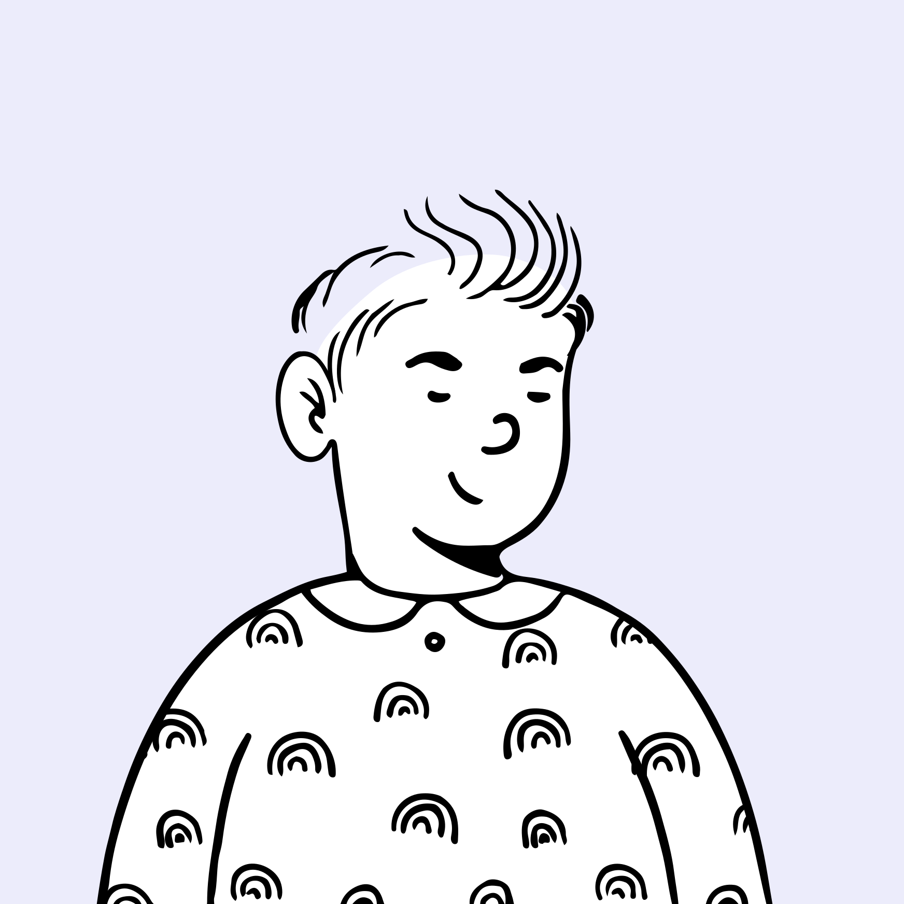
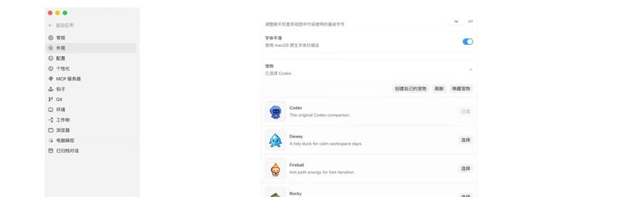
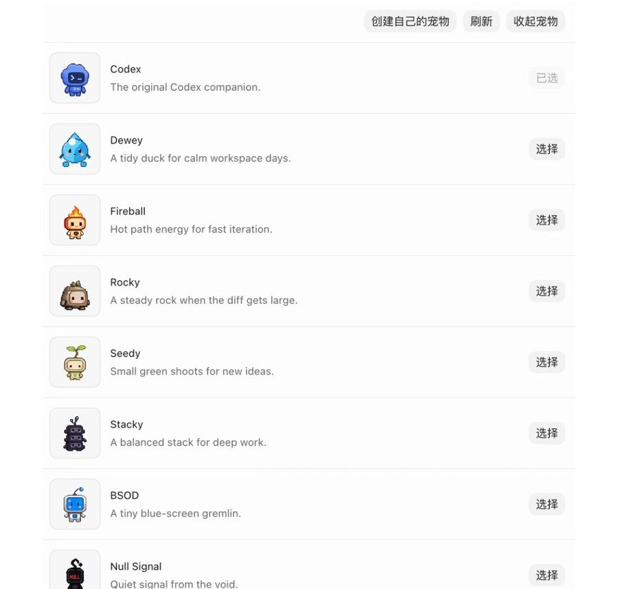
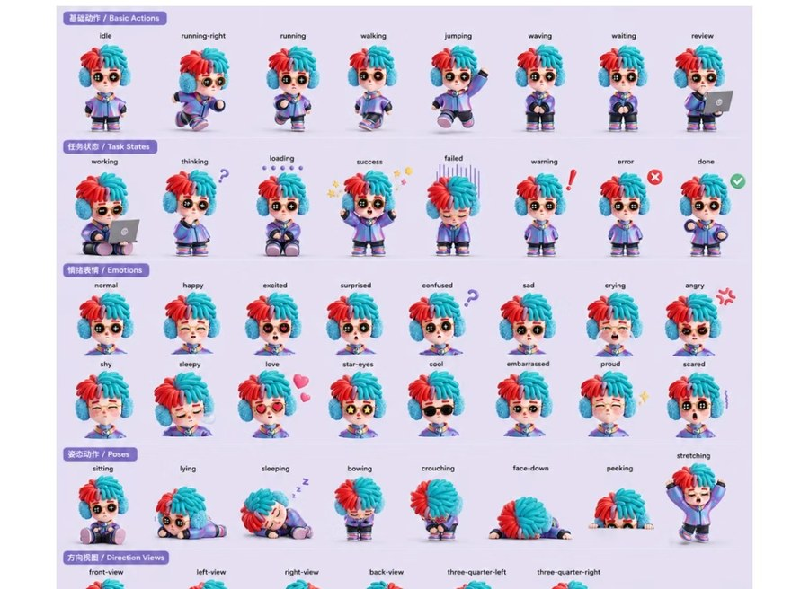
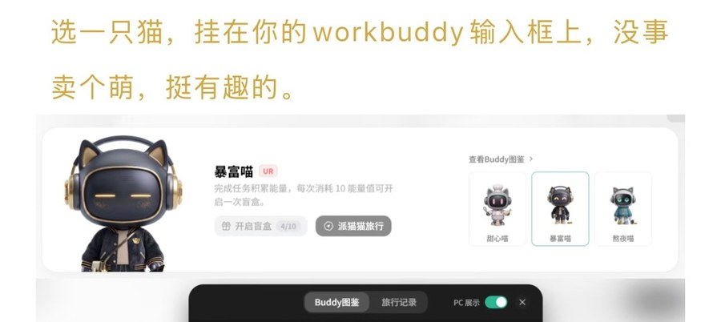
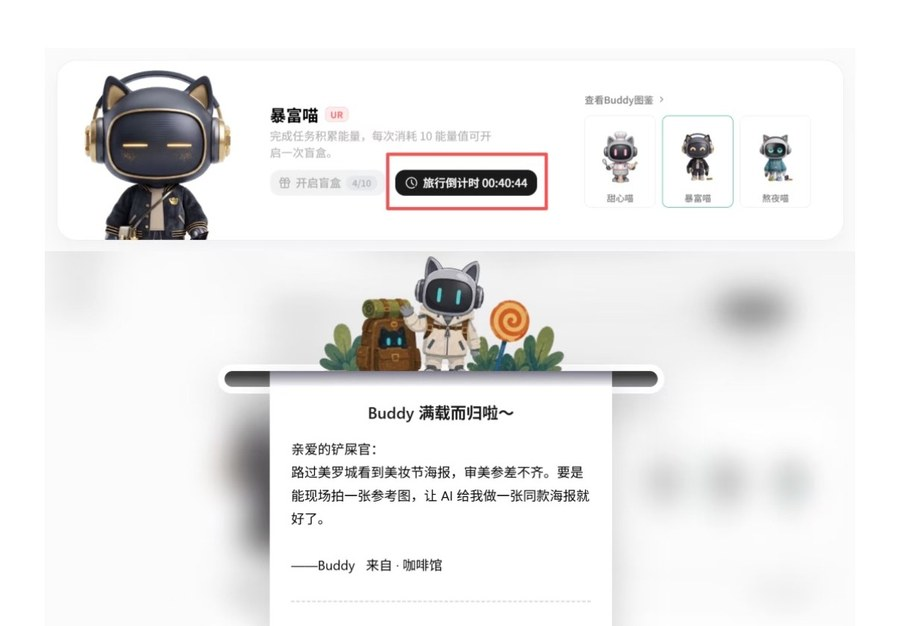
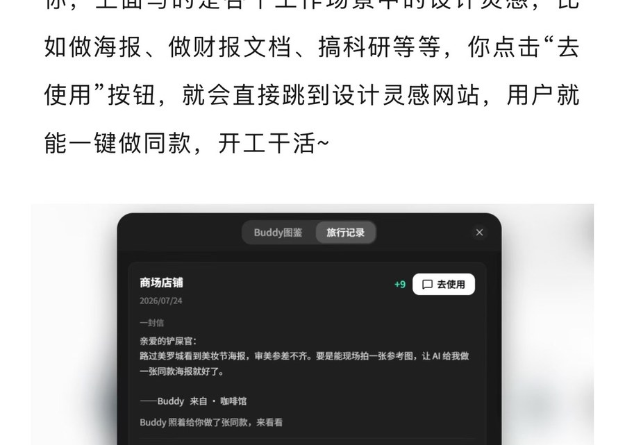

01
定位判断
Positioning
IDE 天花板诊断一句话定位
先把「我们是什么」定死
码道 IDE 的价值单元是代码库，而全民用户不具备仓库、环境与验收标准三个前提。
人群锚定「一人多岗的执行者」，需求押在「可复用自动化」这一层，而不是问答。
人群口径、V1 主链路范围、宠物模式是否默认开启并按 P0 投入。
常见归因是「工具属性太重」。这个归因不够精确——按它推导，只会做出一个 IDE 阉割版，两头不靠。
真实原因是 IDE 的价值单元是代码库，并隐含三个前提：你有仓库、你自备运行环境、你自己定义「做完了」。全民用户三个都不具备。
把跨工具、重复、要交付的任务，做成可验收、可返工、可复跑的成果；第一次通过对话完成交付，成功后自动沉淀为一件可再次执行的「活」。
「全民开发者」是市场规模的说法，不是人群定义。按它做需求一定发散——因为它没有任何可观察的筛选条件。
楔子人群的三条可观察条件：每天 2 小时以上花在重复、跨 3 个以上工具、要出稿出表出结论的活上；会用工具但不写代码；没有 IT 支持。
纵轴是痛点强度，横轴是我们触达并说服他的难度。右上角不是先做的——强痛点但说服成本高的人群（如被竞品密集覆盖的运营岗）应当分阶段进入。
这张图的用途只有一个：把「先服务谁」变成可以争论、可以被推翻的判断，而不是一句「面向全民」。

只在被工作打断的缝隙里用。
一张截图、一句群里的转述。
不看过程，只看成品度。
日报、周报、月结、活动节点。
怕出事，怕担责。
工具是任务的附属，不是目的地。
只会「把东西扔过来」，不会补全上下文。
看不懂步骤，只能判断「能不能交」。
单次省 20 分钟不构成留下的理由。
责任在他，所以控制权必须在他。
「要先打开客户端」就已经输了。
反问要给选项，不要开放式提问。
并且允许只改一小段。
这是留存核心，不是加分项。
破坏性动作必须点名对象。
已被通用 AI 完全覆盖。必须有，但不作为卖点，只做对话中枢的兜底。
竞品主战场。用它拉新，拼的是成品度与可返工，不是生成速度。
竞品都做得浅。V1 押注在这一层，它同时是唯一真正的留存引擎。
V2 再做，并作为高价值用户升舱到码道 IDE 的桥，不在 Work 内做重。
真文件、真表格、真浏览器、真终端。云端办公 Agent 结构性做不到，数据也不必出端。
过程可追溯、结果可验收、局部可重跑。对话框产品只能重问，不能返工。
搭档与智囊团把提示词门槛换成角色认知门槛——这是全民用户唯一学得会的抽象。
第一次对话、第二次一键、第三次定时。竞品做得最浅、也最难补的一环。
四层架构、一条主链路，以及 V1 明确不做的事——先界定做什么，再界定坚决不做什么。
V1 只把这一条链路做到成品级：投喂 → 澄清 → 开工 → 验收 → 存成一件活；被采纳的交付会反向沉淀成下一次的一键。
自动化必须由一次已成功的真实交付反向生成，而不是让用户先画流程图——正向配置是全民用户的第一道劝退门。
成品度不够、用户改起来比自己做还慢——这是留存崩掉的第一个原因，比功能少得多致命。
因此 V1 把智囊团收窄到六个团：数据整理、汇报交付、表格自动化、资料研究、内容批量、桌面杂活。每团都要做到能直接交出去的完成度（含排版、命名、格式）。
上位品牌「AI 梦工厂」。桌面宠物不首先代表一只动物、一个机器人或拟人化 Logo，而代表正在成真的可能性——先定义人机关系与体验，再推导形象。
设计母题是成真体：一种会随用户意图逐渐获得形态、并把形态转化为成果的共创生命。它需要三种品牌能力。
他们在浏览器、文档、聊天、会议、本地文件和业务系统之间频繁切换，发起、过程、结果三处都会断。
宠物要降低的是三类成本：委托成本（更快把任务与上下文交出去）、监控成本（不必反复打开 Work 查看）、接管成本（决策与异常时快速理解并行动）。
先接住再澄清；用选项与草案帮助表达，不要求先学术语，不在结构化过程中偷换用户目标。
用中间成果代替抽象等待；进度围绕成果成熟度表达，每轮交互都推动可见变化。
低风险可逆的事安静做完；影响方向、责任与安全时停下，把判断权交还给人。
可信不等于永不失败，而是始终知道它能做什么、在做什么、为什么停下、能否恢复。
完成后沉淀模板、技能、偏好与验收标准。强调「你创造了什么」，不是「AI 多强大」。
这五次变化是宠物所有交互的验收口径——每一次都必须有对应的设计回应，不能停在态度层。
用户角色也随之变化：从操作者变成愿望发起者、目标定义者、关键决策者、结果验收者；Agent 则从问答工具变成意图澄清者、任务规划者、持续执行者、风险暴露者与成果交付者。
每一层只回答一个问题。宠物本体只解决「它是否正常、是否需要我」，其余靠逐层展开——单击是快速气泡，不是一张功能菜单。
状态由形态确定度、动作强度、注意方向、边界完整度四条视觉轴共同表达。接收 / 规划 / 执行共用信息色，靠形态与动作区分——颜色不能独立承担状态。
动作只表达用户、Agent 与成果之间的关系变化。失败与恢复表达「工作关系断点」和「断点重新连接」，不表达角色受伤。
不预先确定动物、机器人或抽象体。首轮视觉探索可以不使用现有 Logo 与品牌色，品牌适配是第二步；但所有候选形态必须同时满足四个特征。
分工写死：角色让用户感受到状态变化，气泡解释事实并提供行动，抽屉展示过程、风险与产物，Work 负责复杂编辑与追溯。
宠物最大的风险不是不好看，是烦。它被关掉，整条「常驻感知层」的差异化就一起失效——这是本章优先级最高的一页。
因此把打扰写成分级、限频、可追溯的契约；并用 关闭率、隐藏率与误打扰反馈反向验证纪律是否真的生效，而不是只写在文档里。
主动性是信任的第一道闸。「用户一段时间没操作」不是主动的理由，「提高日活」更不是。
权限口径：默认不持续录屏、不读取全部剪贴板历史；麦克风、屏幕、摄像头开启时常驻标识；发送、发布、付款、删除、覆盖与外部分享必须确认。授权粒度为仅本次 / 本项目 / 始终允许，且用户可随时撤销。
生命感来自注意方向、呼吸节奏、对输入的回应与状态变化的连续性。
想象力来自形态变化、材料组织与从无形到有形的过程。
科技感来自状态精确、运动有规则、结构能解释能力、过程与边界透明。
长期在场、知道何时安静、记住被授权的偏好、中断后能继续。
五个核心假设：用户理解它是 Agent 入口而不是娱乐宠物；能识别待命 / 规划 / 执行 / 需要你 / 完成 / 失败；愿意把长任务交给它；人格提高关系感但不降低专业可信度；常驻的便利大于视觉与通知干扰。
首轮测试让所有候选形态完成同一剧本：接住一组文件 → 从模糊进入规划 → 形成中间成果 → 停下请求判断 → 从判断点恢复 → 交付可验证成果 → 呈现可恢复失败 → 进入减少动态效果。
以 Codex 内置宠物为第一参照——它是唯一与码道同位的第一方内置桌宠；再看 Clawd on Desk、Awesome Codex Pet、QQ Pet Automation 三个开源项目。判断哪些机制能支撑「个人 Agent 桌面分身」，哪些只适用于娱乐型桌宠，以及许可证与 IP 的红线在哪里。






不要把运行事件直接绑定动画。先归一为可审计的事实，再决定视觉。
先判「运行真的结束了吗」（Clawd 已实现 hold / 防抖 / 完成三分支），再用完成公式判「结束得算不算数」。只过第一级＝需要你，不是已完成。
桌面只展示当前最需要用户知道的一件事，并行数只作二级信息。
核心工作态必须有真实资产、不许回落，一次性事件态才允许降级表达；皮肤不得改权限、风险与状态语义，不得自带脚本与外链。
从「喂养宠物」改为「减少重复沟通、积累个人能力」。阻塞可以分级，但分级由事实决定、不由时间决定，且不自动恶化。
这条排序的作用是在评审现场终止争论：任何取舍都按序号让位。宠物的北极星指标是通过它发起并最终完成验收的有效任务数——不是打开次数，也不是互动次数。
请就三件事给出结论：人群口径、V1 主链路范围、宠物模式是否默认开启并按 P0 投入。